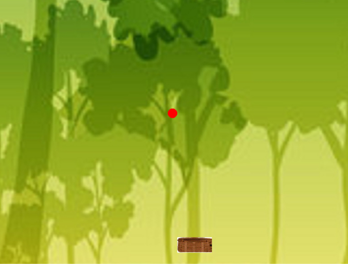
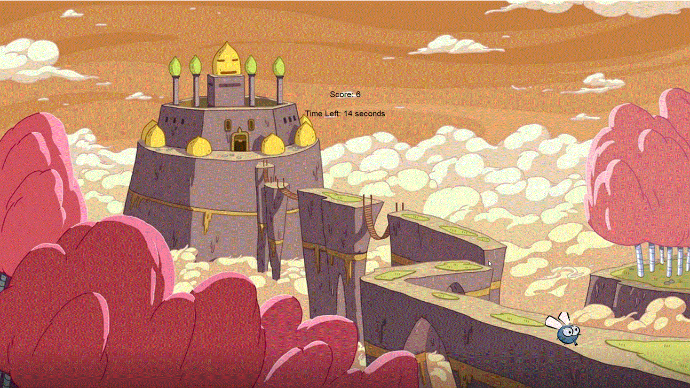

Home
Portfolio
About Me
This is my Portfolio Page!
1.1.9 project: Fruit Falling Game

This is a game where you can use the arrow keys to control the basket at the bottom and catch the fruit falling from the sky
1.2.5 project: Protect the Castle from the Flies

In this game the player clicks on the flies to make them dissapear and stop them from attacking the castle to add to their score within 30 seconds
Scratch Game Project: Cupcake Surfers
In this game the character moves side to side as well as up and down with the arrow keys, collecting cupcakes to add to the store
2.1.6 Fish Tank Project

In this project we helped solve security vulnerabilties by fixing the code to make sure the fish tank system had no errors
Scratch Game Project: 3.1.6 Rover Project
My group analyzed different graphs and tables we obtained from the data given to try to figure out where the rover was located. Our graphs included temperature, light, sound, and wind. Based on our graphs and the expected data for the rocky mountains, we were able to conclude that the data was most similar to that of the rocky mountains and therefore determined that is where it is located.